TallyUp Golf
Score the round, settle the side games.
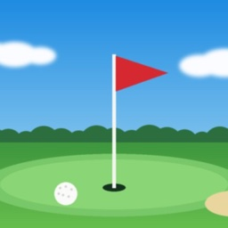
See the hole you're on, with the yards to the front, middle and back of the green from where you stand. Keep score hole by hole for up to four players, with strokes given for handicaps. Add skins, a Nassau or wolf, and at the end TallyUp Golf works out who owes whom in the fewest payments.
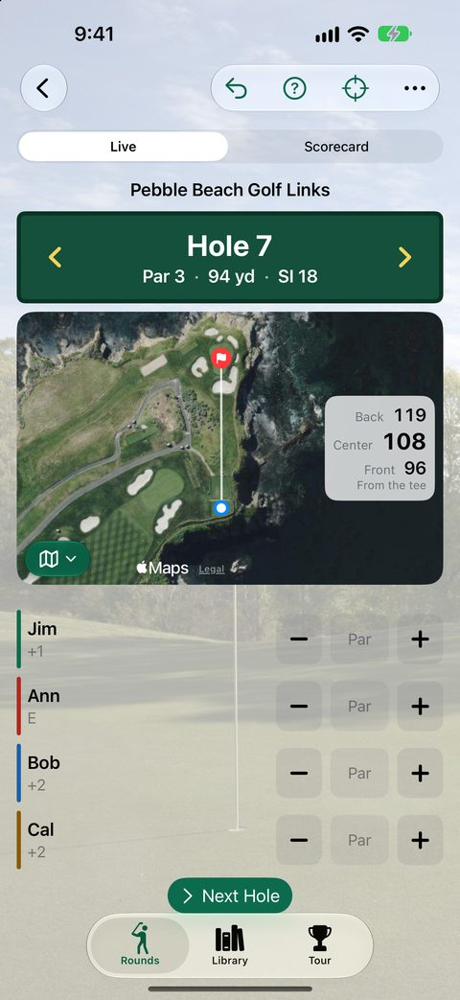
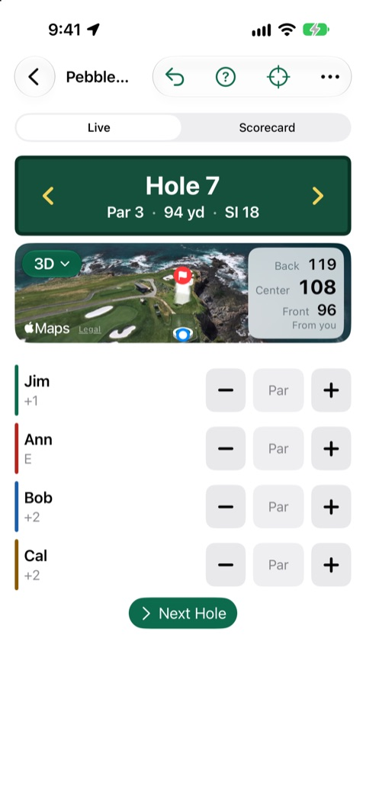
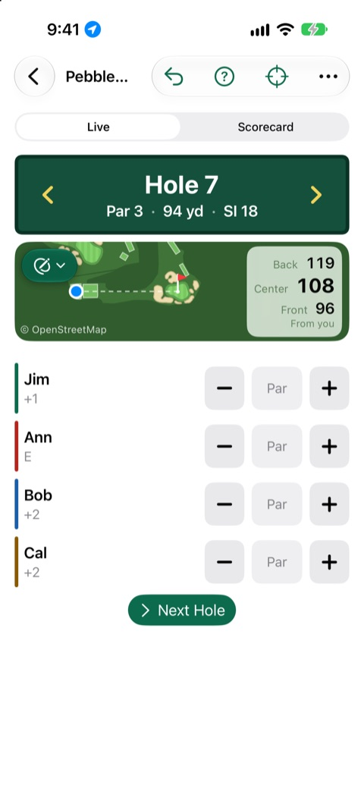
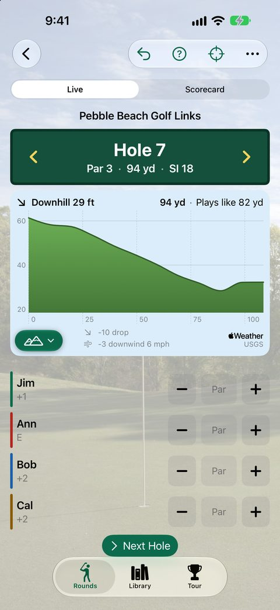
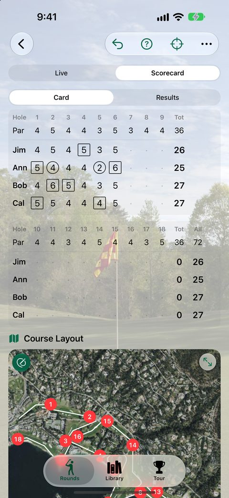
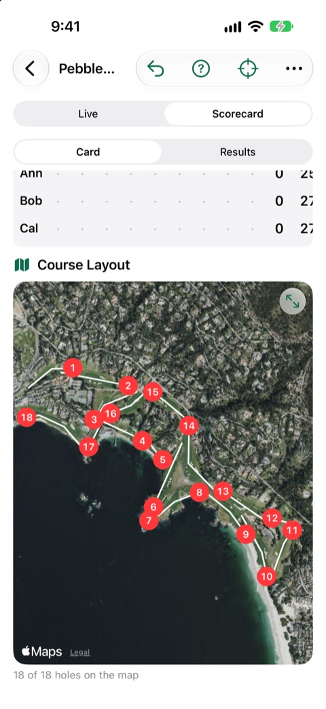
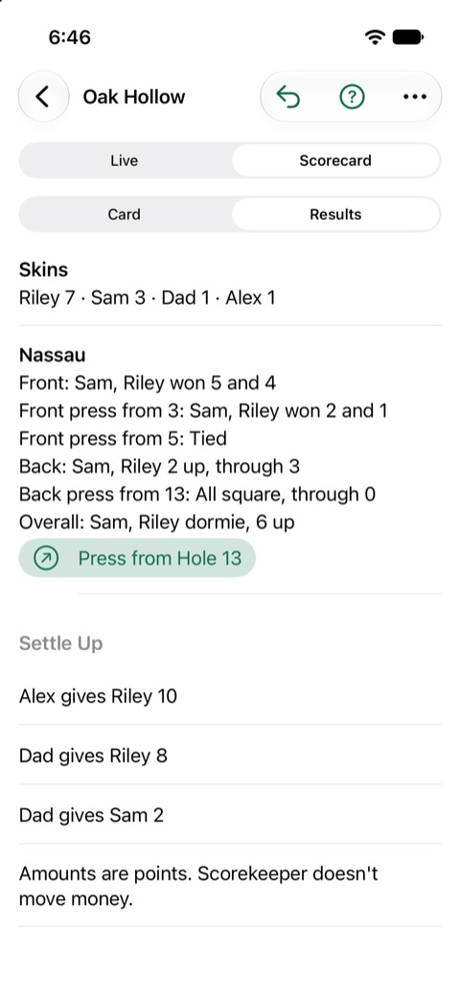
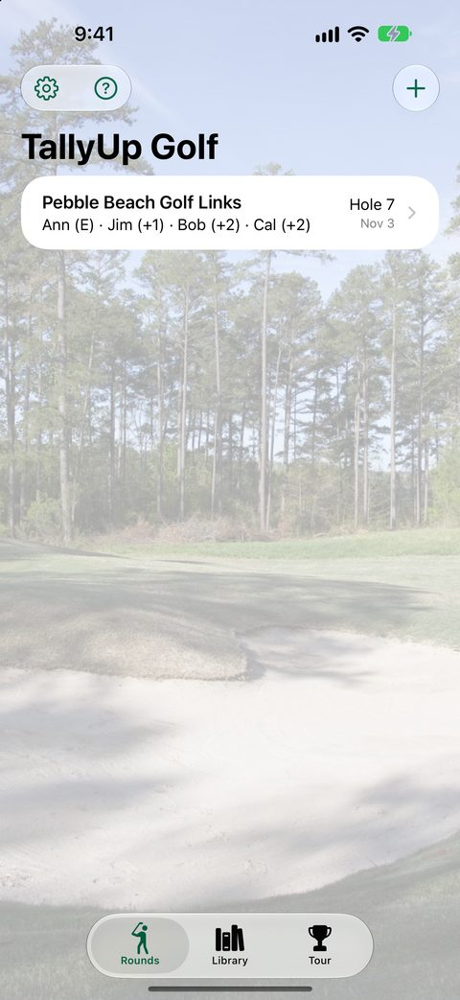
On iPhone Duo, open the phone and the round spreads across both halves: the scorecard and the whole course on one, the hole and the score buttons on the other. Closed, it's all there on the cover display.
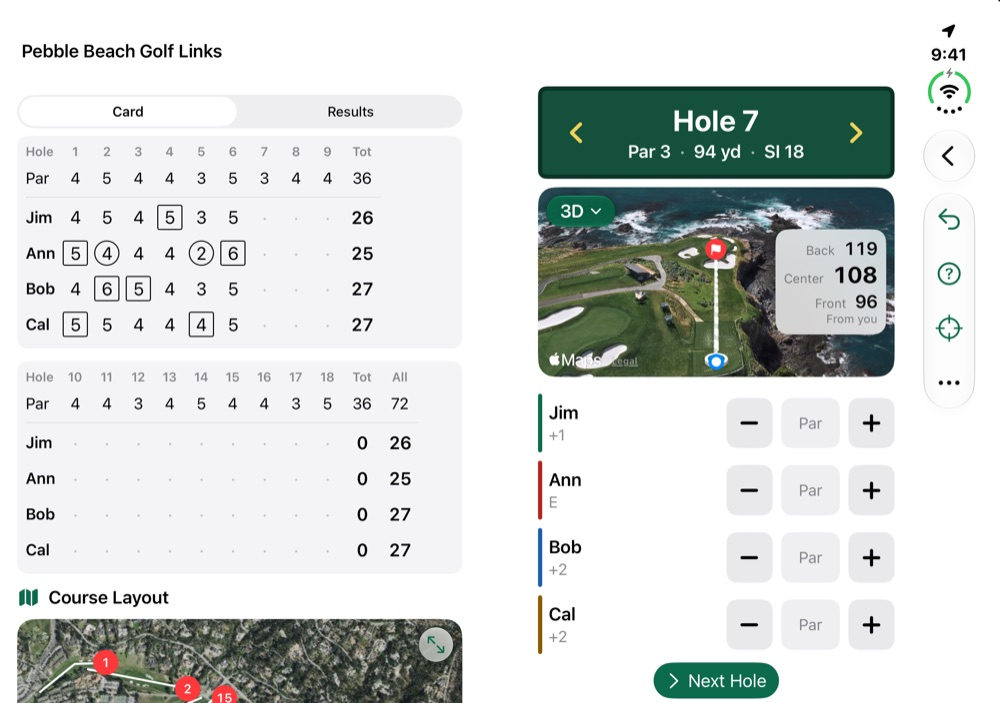
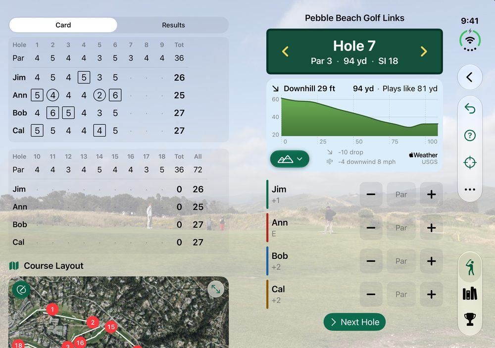
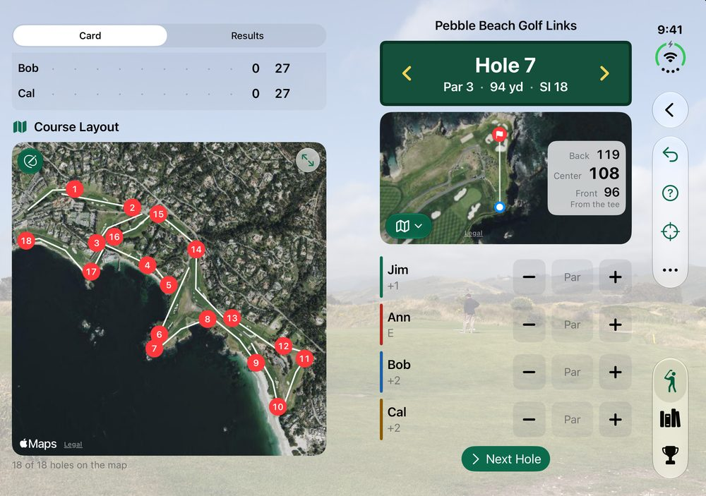
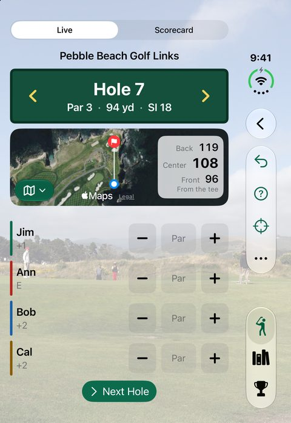
Each hole on the satellite map, turned to play from the tee, with GPS yards to the green. Switch to 3D, a yardage-book drawing, or a side view of how much it climbs or drops.
Under the scorecard, every hole on the map. Tap a number to jump to that hole. Course shapes come from OpenStreetMap, and heights from the US Geological Survey.
A blank score starts at par, so most holes take one tap per player. Plus and minus cover the rest.
Stroke play, Stableford, match play, skins, Nassau with presses, and wolf, played gross or net.
Every side game adds up to the fewest payments between players, in points. It keeps the tally; it doesn't move money.
Search an open course directory for pars, stroke index, yardage and tees, or type the card in. Once any golfer has opened a course, its map and heights download in seconds. Courses you've played work with no signal.
Questions? See TallyUp Golf Support and the privacy policy. Back to DeeDogDevelopment.